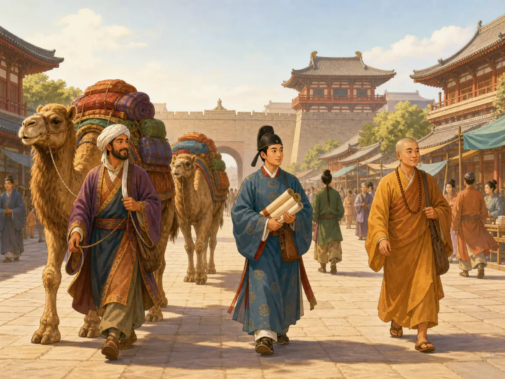

唐朝长安：远方的人都来
Tang Chang'an: A Capital Where Many Worlds Met
Page 1
朱雀大街上一百五十五米宽的早晨
Morning on Zhuque Avenue

On one broad avenue, people from many places pass by each other.
公元八世纪的一个清晨，长安城朱雀大街上，一个波斯商人牵着三匹骆驼往西市走。骆驼背上驮着波斯的玻璃器皿和地毯，铜铃铛在晨风里"叮当当-叮当当"地响。他路过正在誊抄律令格式的日本遣唐使-遣唐使跪在路边一块毡垫上借晨光赶功课；旁边是刚做完晨课的印度僧人在化缘。
长安城住着一百多万人，是当时世界上最大的城市之一。其中有不少来自外国和边远地区的人。朱雀大街宽达一百五十五米-比今天北京的长安街还宽。棋盘一样的街道把整座城切成一百零八个坊。你走在长安城里，会不断听见不同口音、不同语言，像是许多远方的人都挤进了同一座城。
On a morning in the eighth century, on Zhuque Avenue in Chang'an, a Persian merchant led three camels toward the West Market. On the camels' backs were Persian glassware and carpets, and the copper bells rang in the morning wind - ding-dang, ding-dang. He passed a Japanese envoy from the mission to Tang China, kneeling on a felt mat by the roadside and copying official rules and forms by the morning light. Nearby, an Indian monk who had finished his morning prayers was asking for food or donations.
More than one million people lived in Chang'an. It was one of the largest cities in the world at that time. Many of its people came from foreign lands or faraway border regions. Zhuque Avenue was one hundred and fifty-five meters wide - even wider than Chang'an Avenue in Beijing today. Streets laid out like a chessboard divided the whole city into one hundred and eight wards. If you walked through Chang'an, you would keep hearing different accents and different languages, as if people from many faraway places had all been squeezed into one city.
Page 2
西市-八世纪的全球贸易中心
The West Market - An Eighth-Century World Market
The Western Market brought together goods from many distant places.
长安有两个大市场。东市卖本国货，西市才更像国际商场。西市的街上开满了胡人酒铺和外来商人的货摊。波斯商人把玻璃器皿和地毯摆在地上；西域胡商从马背上卸下葡萄干和核桃；日本使团把抄好的佛经、律令和乐谱装进木箱准备运回大阪；远道而来的使节和商人带着香料、骏马和各种稀奇货物走进这座城。
Chang'an had two large markets. The East Market sold goods from inside China. The West Market felt more like a world market. Its streets were full of wine shops run by foreigners and stalls run by merchants from faraway places. Persian merchants spread glassware and carpets on the ground. Traders from the Western Regions unloaded raisins and walnuts from horseback. Japanese missions packed copied Buddhist scriptures, law codes, and music scores into wooden boxes to carry back to Osaka. Envoys and merchants from far away entered the city with spices, fine horses, and all kinds of unusual goods.
Page 3
遣唐使-海上三分之一的人葬身风暴
Students and Visitors
Visitors from Japan studied in Chang'an and carried ideas back home.
日本是最认真的学生。从公元七世纪开始，奈良朝廷不断派出遣唐使团。船从大阪出发横渡东海-风暴和暗礁让许多船再也没有回来。但日本没有停过。活下来的人踏上长安以后，就开始拼命地学、拼命地抄。抄律令，抄建筑图样，抄城市规划图。后来，日本的都城建设和制度设计都深受唐朝影响。你今天走进京都老城区，仍然能看见一些和长安相通的城市格局影子。
Japan was one of the most serious students. Starting in the seventh century, the court in Nara kept sending missions to Tang China. Their ships sailed from Osaka across the East China Sea. Storms and hidden rocks caused many of the ships to disappear forever. But Japan did not stop.
After the survivors reached Chang'an, they studied and copied everything they could. They copied law codes, building designs, and city plans. Later, Tang ideas helped shape Japan's capital cities and ways of running government. Even today, when you walk through old Kyoto, you can still see shadows of city patterns that connect back to Chang'an.
Page 4
大秦景教流行中国碑-一座石碑的见证
The Nestorian Stele - A Stone Witness
A stone stele reminds us that religions from far away also reached this city.
西安碑林藏着一块世界上最奇特的石碑-"大秦景教流行中国碑"。"大秦"是罗马，"景教"是聂思脱里基督教。唐太宗贞观年间，叙利亚传教士阿罗本用骆驼驮着圣经经卷来到长安。唐太宗派人出城迎接他，以国礼相待-允许他翻译圣经、由朝廷出资在长安义宁坊建一座大秦寺。
公元七世纪-帝国朝廷接见了一位来自远方的基督教传教士，允许他译经、建寺。那块碑后来重新被人发现，至今碑顶还刻着十字架和佛教莲花座并置的浮雕。它是一块石头，却又不止是一块石头-它提醒我们，这座城市曾经把许多遥远世界的人和信仰都接进了城门。
In the Forest of Stone Steles in Xi'an, there is one of the most unusual monuments in the world: the Nestorian Stele. "Daqin" meant Rome, and "Jingjiao" meant Nestorian Christianity, a branch of Christianity from far to the west. During the reign of Emperor Taizong of the Tang dynasty, a Syrian missionary named Alopen came to Chang'an with camel loads of Christian scriptures. Emperor Taizong sent people out of the city to welcome him and treated him with great honor. He allowed Alopen to translate the scriptures, and the court paid to build a church in Chang'an.
Think about that for a moment. In the seventh century, the imperial court welcomed a Christian missionary from far away, allowed him to translate sacred texts, and let him build a church. The stone stele was later rediscovered. Even now, its top shows a carved cross together with a Buddhist lotus base. It is a stone, but it is more than a stone. It reminds us that this city once opened its gates to people and beliefs from many distant worlds.
小结
Summary
朱雀大街宽得惊人，西市里挤满来自远方的货物和面孔，日本遣唐使在这里学习，远道而来的宗教也在这里落脚。长安当然是一座中国的都城，但它同时也是一座向世界敞开的城市。说到八世纪的热闹、开放和交流，长安一定是最耀眼的地方之一。
Zhuque Avenue was astonishingly wide. The West Market was crowded with goods and faces from faraway places. Japanese envoys came here to study, and religions from distant lands also found a home here. Chang'an was of course a Chinese capital, but it was also a city open to the world. When people think about the busy, open, connected world of the eighth century, Chang'an is one of the brightest places to remember.